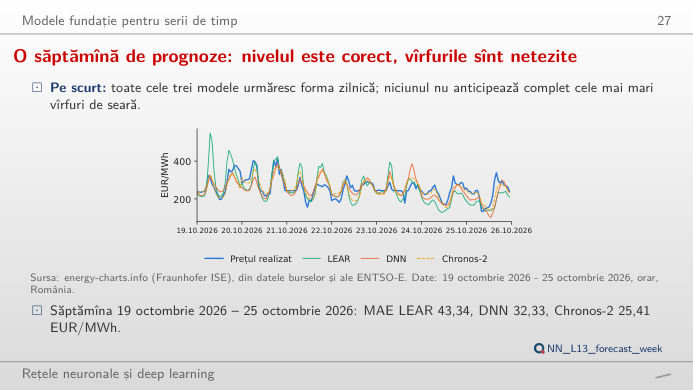
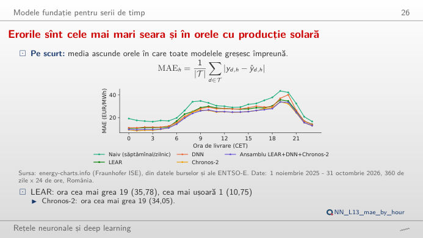
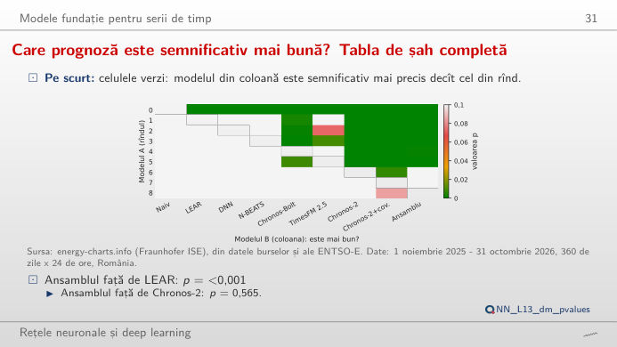
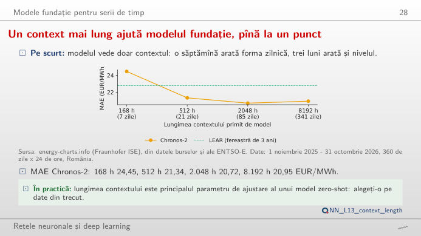
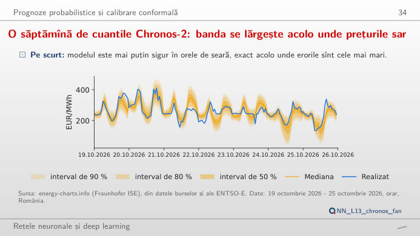
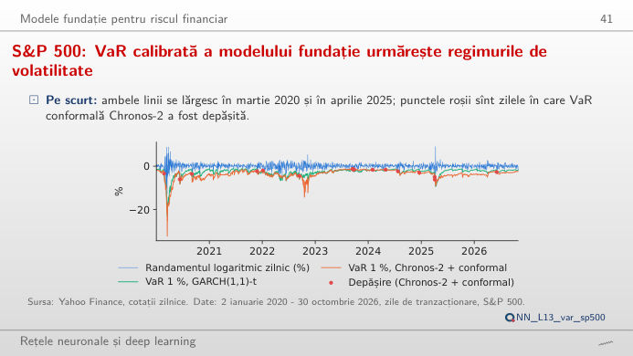

În stînga este slide-ul din curs, în dreapta aceeași figură, recalculată în browser din prognozele cursului cînd modificați un control. Prognozele sînt cele din anul de test, 1 noiembrie 2025 – 31 octombrie 2026 (360 de zile cu toate cele 24 de ore și toate modelele disponibile): regula naivă, LEAR (model autoregresiv estimat prin Lasso), DNN (rețea neuronală profundă cu 24 de ieșiri), N-BEATS (analiza prin expansiune în baze neuronale) și modelele fundație Chronos-2, Chronos-Bolt și TimesFM (model fundație pentru serii de timp), folosite zero-shot, adică fără nicio antrenare pe datele noastre. Butonul ▶ modifică parametrul principal pas cu pas. Sub fiecare figură: o sinteză numerică, o întrebare pentru sală și Quantlet-ul cu codul figurii.
Prognoza prețurilor pentru ziua următoare în România · Este o prognoză cu adevărat mai bună? · Modele fundație: contextul și cuantilele · Valoarea expusă la risc cu un model fundație
Prognoza prețurilor pentru ziua următoare în România
O săptămînă de prognoze: nivelul este corect, vîrfurile sînt netezite

Răspuns
Chronos-2, cu o eroare absolută medie (MAE) de 25,41 EUR/MWh, față de 32,33 EUR/MWh pentru DNN și 43,34 EUR/MWh pentru LEAR (cifrele din curs). Pe întregul an de test, ordinea este aceeași în vîrf: Chronos-2 cu covariabile 20,41, Chronos-2 20,72, LEAR 22,79, DNN 23,06 EUR/MWh. Mutați săptămîna: toate modelele prind nivelul și netezesc vîrfurile de seară; săptămînile cu cele mai mari erori sînt cele cu salturi de preț pe care niciun model nu le-a anticipat.
Erorile sînt cele mai mari seara și în orele cu producție solară

Răspuns
Seara: pentru LEAR, ora cea mai slabă este 19:00 (35,78 EUR/MWh), iar cea mai bună 01:00 (10,75 EUR/MWh); Chronos-2 are aceeași oră cea mai slabă (34,05) și cea mai bună (8,57 EUR/MWh). Vîrful de seară vine cînd producția solară a dispărut și prețurile sar; noaptea este liniștită și previzibilă. Alegeți primăvara sau vara pentru a vedea a doua cocoașă a erorilor, la amiază, cînd producția solară împinge prețurile în jos, uneori sub zero.
Este o prognoză cu adevărat mai bună?
Care prognoză este semnificativ mai bună? Tabla de șah completă

Răspuns
Da. Testul Diebold–Mariano (DM) compară sumele zilnice ale erorilor absolute ale celor două modele pe cele 360 de zile; cursul raportează o valoare p sub 0,0001 pentru „Chronos-2 este mai precis decît LEAR”. Pentru DNN față de LEAR, valoarea p este 0,76 (nicio dovadă că DNN este mai bun), pentru N-BEATS față de DNN 0,36. O MAE mai mică pe un an de test nu ajunge: curba din dreapta trebuie să crească constant, nu din cauza cîtorva zile.
Modele fundație: contextul și cuantilele
Un context mai lung ajută modelul fundație, pînă la un punct

Răspuns
Pînă la un punct. Cu 168 de ore (o săptămînă), MAE este 24,45 EUR/MWh, cu 512 ore 21,34, cu 2.048 de ore (circa 85 de zile) 20,72, iar cu 8.192 de ore (circa 341 de zile) 20,95 EUR/MWh (cifrele din curs). O săptămînă este prea scurtă pentru ca tiparul săptămînal să se repete suficient; un an întreg de context readuce vechiul regim al prețurilor și nu aduce nimic peste circa trei luni.
O săptămînă de cuantile Chronos-2: banda se lărgește acolo unde prețurile sar

Răspuns
Nu întocmai: intervalul brut de 80% al Chronos-2 acoperă 76,5% din orele anului de test (lățimea medie 60,03 EUR/MWh). Corecția conformală (split-conformal) lărgește sau îngustează intervalul cu cuantila erorilor din ultimele 60 de zile și aduce acoperirea la 79,3% (lățimea 63,89 EUR/MWh); pentru 90%: 88,3% brut, 89,4% conformal. O fereastră de calibrare mai scurtă reacționează mai repede, dar este mai zgomotoasă.
Valoarea expusă la risc cu un model fundație
S&P 500: VaR calibrată a modelului fundație urmărește regimurile de volatilitate

Răspuns
22 pentru cuantila brută (1,28%, testul Kupiec p = 0,262) și 16 cu deplasarea conformală calibrată pe 250 de zile de tranzacționare (0,93%, p = 0,774); simularea istorică are 31 (p = 0,003), iar GARCH(1,1) 32 (p = 0,001). La 5%, cuantila brută a Chronos-2 este prea strînsă (122 de depășiri față de 85,9 așteptate, p < 0,001), iar deplasarea conformală o aduce la 93 (p = 0,434). Testul Kupiec întreabă doar dacă proporția depășirilor este egală cu nivelul nominal.
Prețurile pentru ziua următoare din România (orare, EUR/MWh) și consumul: energy-charts.info (Institutul Fraunhofer pentru Sisteme de Energie Solară, ISE), din datele burselor și ale ENTSO-E (Rețeaua europeană a operatorilor de transport și sistem pentru energie electrică). Prețurile zilnice de închidere ale S&P 500 și Bitcoin (BTC/USD): datele de piață ale cursului (data/clean). Toate prognozele, cuantilele și seriile de valoare expusă la risc au fost calculate de lectures/L13/analysis_L13.py; pagina doar le recombină (erori, teste, deplasări conformale, numărul depășirilor).